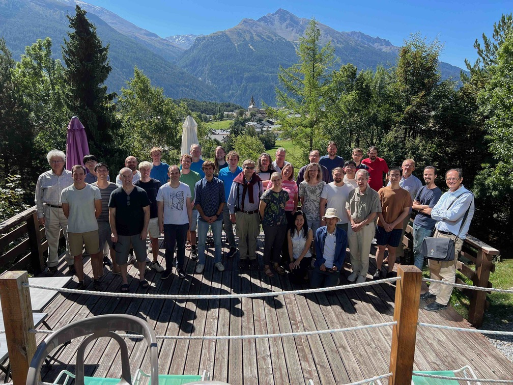
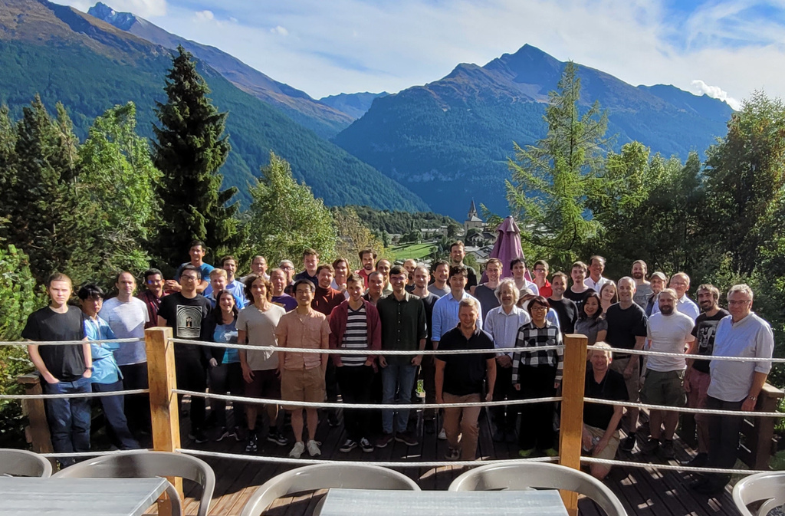
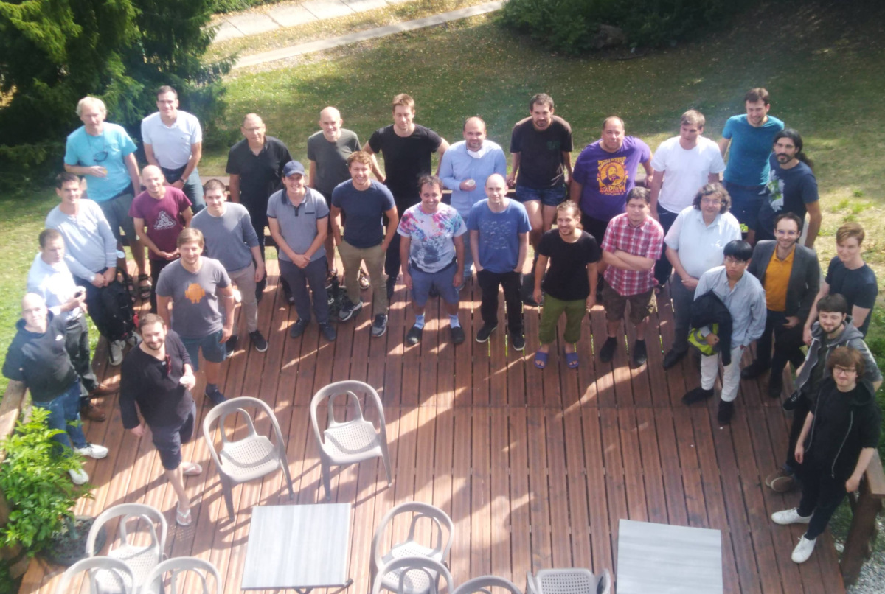
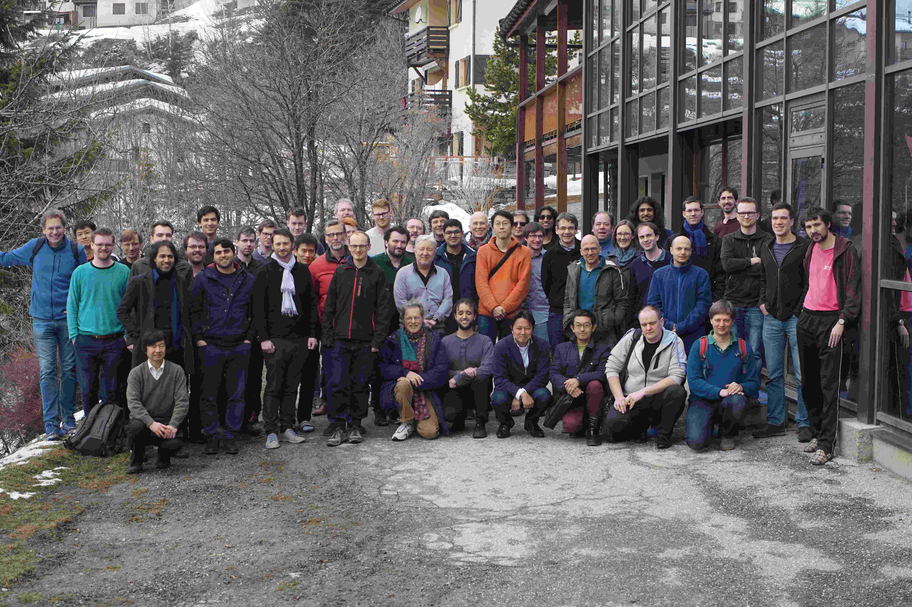
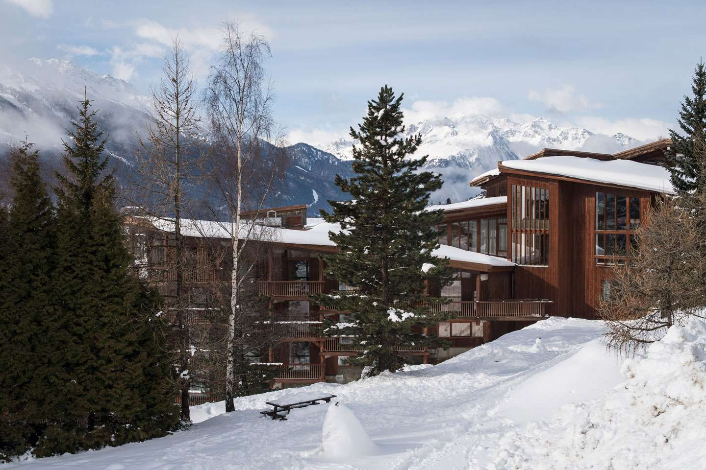

Large-scale semantic processing and strong computer assistance of mathematics and science is our inevitable future. New combinations of AI and reasoning methods and tools deployed over large mathematical and scientific corpora will be instrumental to this task. The AITP conference is the forum for discussing how to get there as soon as possible, and the force driving the progress towards that.
There will be several focused sessions on AI for ATP, ITP, mathematics, relations to general AI (AGI), Formal Abstracts, linguistic processing of mathematics/science, modern AI and big-data methods, and several sessions with contributed talks. The focused sessions will be based on invited talks and discussion oriented. AITP'26 is planned as an in-person conference.
| João Araújo | Universidade Nova de Lisboa | |
| Michael R. Douglas | Stony Brook University | |
| Mario Carneiro | Chalmers University and University of Gothenburg | |
| Simon Frieder | University of Oxford | |
| Thibault Gauthier | AI4REASON | |
| Ben Goertzel | SingularityNET | |
| Georges Gonthier | INRIA | |
| Sean Holden | University of Cambridge | |
| Jan Jakubuv | Czech Technical University in Prague | |
| Mikoláš Janota | Czech Technical University in Prague | |
| Moa Johansson | Chalmers University and University of Gothenburg | |
| Cezary Kaliszyk | University of Melbourne | |
| Peter Koepke | University of Bonn | |
| Konstantin Korovin | The University of Manchester | |
| Michael Kinyon | University of Denver | |
| Miroslav Olsak | University of Cambridge | |
| Jan von Plato | University of Helsinki | |
| Auguste Poiroux | EPFL and Math Inc | |
| Aarne Ranta | Chalmers University and University of Gothenburg | |
| Michael Rawson | University of Southampton, UK | |
| Stephan Schulz | DHBW Stuttgart | |
| David Stanovský | Charles University | |
| Martin Suda | Czech Technical University in Prague | |
| Christian Szegedy | AletheAI | |
| Josef Urban | AI4REASON and University of Gothenburg | |
| Robert Veroff | University of New Mexico | |
| Andrei Voronkov | Easychair and University of Manchester | |
| Zsolt Zombori | Alfréd Rényi Institute of Mathematics |
| Simon Frieder | Open Weights Are Not Enough: Reproducing an IMO26 Medal with FM-Pochi-32B |
| Ben Goertzel | From AITP to AGITP: Toward a Neural-Symbolic Architecture for Creative Math Conjecturing |
| Michael Kinyon | Automated Deduction in Quasigroup and Loop Theory Or: How I Learned to Stop Worrying and Start Letting Computers Prove Theorems |
| Jan von Plato | Deciphering Goedel |
| Auguste Poiroux | (Auto-)Formalization of the Fields Medal Sphere Packing Results (TBC) |
| Christian Szegedy | TBA |
| Robert Veroff | Automating the search for proofs of open conjectures |
| Andrei Voronkov | TBA |
| Mantas Bakšys | University of Cambridge |
| Guillaume Baudart | INRIA |
| Jasmin Christian Blanchette | LMU Munich |
| David Cerna | Dynatrace |
| Michael R. Douglas (co-chair) | Stony Brook University |
| Ulrich Furbach | University of Koblenz |
| Thibault Gauthier | AI4REASON |
| Aishik Ghosh | Georgia Tech |
| Georges Gonthier | INRIA |
| Zarathustra Goertzel | Czech Technical University in Prague |
| Thomas C. Hales (co-chair) | University of Pittsburgh |
| Sean Holden | University of Cambridge |
| Mikoláš Janota | Czech Technical University in Prague |
| Moa Johansson | Chalmers University and University of Gothenburg |
| Cezary Kaliszyk (co-chair) | University of Melbourne |
| Michael Kinyon | University of Denver |
| Peter Koepke | University of Bonn |
| Konstantin Korovin | The University of Manchester |
| Mirek Olsak | Charles University |
| Jelle Piepenbrock | Eindhoven University of Technology |
| Bartosz Piotrowski | IDEAS NCBR |
| Michael Rawson (co-chair) | University of Southampton, UK |
| Stephan Schulz (co-chair) | DHBW Stuttgart |
| Sho Sonoda | RIKEN AIP |
| Martin Suda | Czech Technical University in Prague |
| Josef Urban | AI4REASON and University of Gothenburg |
| Zsolt Zombori | Alfréd Rényi Institute of Mathematics |
| Georges Gonthier | INRIA |
| Cezary Kaliszyk | University of Melbourne |
| Josef Urban | Czech Technical University in Prague |
| 19:30 | dinner |
| 9:00-10:15 Chair: Josef Urban |
Welcome Auguste Poiroux (Auto-)Formalization of the Fields Medal Sphere Packing Results (TBC) (50m) Cameron Freer From Prompts to Protocols: lean4-skills for AI-Assisted Lean Formalization (20m) |
| 10:15-10:45 | coffee break |
| 10:45-12:05 Chair: Peter Koepke |
Jan von Plato Deciphering Goedel (45m) Aarne Ranta and Jan von Plato From Proof Objects to Linear Proof Texts (15m) Mario Carneiro AI-assisted formalization of Pi injectivity and uniqueness of typing for Lean's kernel (20m) |
| 12:05-13:30 | lunch |
| 16:30-17:00 | coffee break |
| 17:00-19:00 Chair: Mario Carneiro |
Christian Szegedy TBA (45m) Alessandro Sosso, Akhil Arora and Bas Spitters Agentic Proving for Program Verification (25m) Weichen Winston Yin Quiver: A Knowledge-Graph Extraction Pipeline for Lean Libraries (25m) Silvère Gangloff, Jan Hula and Mirek Olsak Generating Lean 4 Tactics from User Specifications: Strategies for LLM-Assisted Metaprogramming (25m) |
| 19:00 | dinner |
| 9:00-10:15 Chair: Stephan Schulz |
Andrei Voronkov TBA (50m) Karel Chvalovský, Martin Suda and Josef Urban Teaching Vampire New Tricks: An Experimental Study of Neural Clause Selection (25m) |
| 10:15-10:45 | coffee break |
| 10:45-12:05 Chair: Andrei Voronkov |
Jan Jakubuv, Cezary Kaliszyk and Martin Suda Learning-Guided Higher-Order Automated Reasoning for Isabelle/HOL (25m) Keneni W. Tesema, Jan Jakubuv and Martin Suda Premise Selection for Higher-Order ATP Problems (25m) Guy Axelrod Learning Abstractions for Guiding Equational Proof Search (25m) |
| 12:05-13:30 | lunch |
| 16:30-17:00 | coffee break |
| 17:00-19:00 Chair: Michael Rawson |
Michael Kinyon Automated Deduction in Quasigroup and Loop Theory Or: How I Learned to Stop Worrying and Start Letting Computers Prove Theorems (45m) J.D. Phillips Equation wrangling: How I learned to stop worrying about large equational sets and love automated deduction (10m) Robert Veroff Automating the search for proofs of open conjectures (45m) Luis Berlioz and Paul-André Melliès Vector Space Representations of Equational Theories (20m) |
| 19:00 | dinner |
| 9:00-10:15 Chair: TBA |
Freek Wiedijk Autoformalization using Formal Proof Sketches (25m) András Z. Salamon and Michael Wehar Long, wide, and trivial: a nondeterministic time hierarchy in Isabelle (progress report) (15m) Levente Rácz Mitigating State Dilution in Axiomatic Proof Trees via Block Attention Residuals (25m) |
| 10:15-10:45 | coffee break |
| 10:45-12:25 Chair: TBA |
Ben Goertzel From AITP to AGITP: Toward a Neural-Symbolic Architecture for Creative Math Conjecturing (45m) Thibault Gauthier Program Generation as an Evolution Operator (15m) Zarathustra Goertzel and Oruži Ai Lean 4 Verified Metamath Verifier: Investigating AI-driven Software Verification (20m) Shane Caldwell ProofJudge: Tool-Grounded LLM Evaluation of Formal Proof Quality in Mathlib (20m) |
| 12:30-14:00 | lunch |
| 17:00-17:30 | coffee break |
| 17:30-19:00 Chair: TBA |
Panelists TBC Panel discussion (topic and panelists TBC) (90m) |
| 19:00 | dinner |
| 9:00-10:15 Chair: Aarne Ranta |
Henri Nikoleit, Ankit Anand, Anurag Murty Naredla and Heiko Röglin The Art of Being Difficult: Combining Human and AI Strengths to Find Adversarial Instances for Heuristics (25m) Guillaume Baudart and Assia Mahboubi A Case Study in Mechanizing Computer-Aided Proofs: Small Gaps Between Primes (15m) Adam Dingle Towards Automatic Verification of Textbook Proof Steps (15m) Jan Jakubuv, Miroslav Olšák, Martin Suda and Josef Urban Neural Conjecturing for Saturation Theorem Provers (20m) |
| 10:15-10:45 | coffee break |
| 10:45-11:50 Chair: TBA |
Dustin Bryant, Jonathan Julian Huerta Y Munive, Cezary Kaliszyk and Josef Urban Munkres’ General Topology Autoformalized in Isabelle/HOL (25m) Miroslav Olšák and David Stanovsky Project Proposal: Automated Correction of Math Assignements (15m) Mario Carneiro, Steven D. Miller, Magnus Myreen and Josef Urban Autoformalizing Fast–Slow Equivalence Proofs for Atlas Computations in the Unitary Dual Problem (25m) |
| 12:30-14:00 | lunch and departure from the center |




The conference will take place from August 30 to September 4, 2026, in the CNRS Paul-Langevin Conference Center located in the mountain village of Aussois in Savoy. Dominated by the "Dent Parrachée", one of the highest peaks of La Vanoise, Aussois is located on a sunny plateau at 1500 m altitude, offering a magnificent panorama of the surrounding mountains and a direct access to the downhill ski slopes or cross country slopes in winter. The total price for accommodation and food for the five days will be around 650 EUR.

The first meal is dinner on August 30st and the last meal is lunch on September 4th. Aussois is less than 2h from the airports of Lyon, Geneve, Chambery, Annecy, Grenoble and Turin. There are trains and buses to Modane from these airports. Aussois is 8km from the Modane TGV station with direct trains from/to Paris. We will organize a bus for the participants from there to Aussois at around 19:10 pm on Sunday, August 30st (waiting for the relevant TGV trains). Further buses to these airports / station can be found here and it is easy to get a taxi from Modane to Aussois and back. We have not yet set the time for the departure of the taxis after lunch on September 4th. This will be optimized based on your departure flights. The center will likely close after our last session on Friday. If you want to stay for the weekend, there are other hotels in and around Aussois. If you have more questions/notes, put them into the registration form and/or look into the FAQ.
{kind=link}
{kind=link}